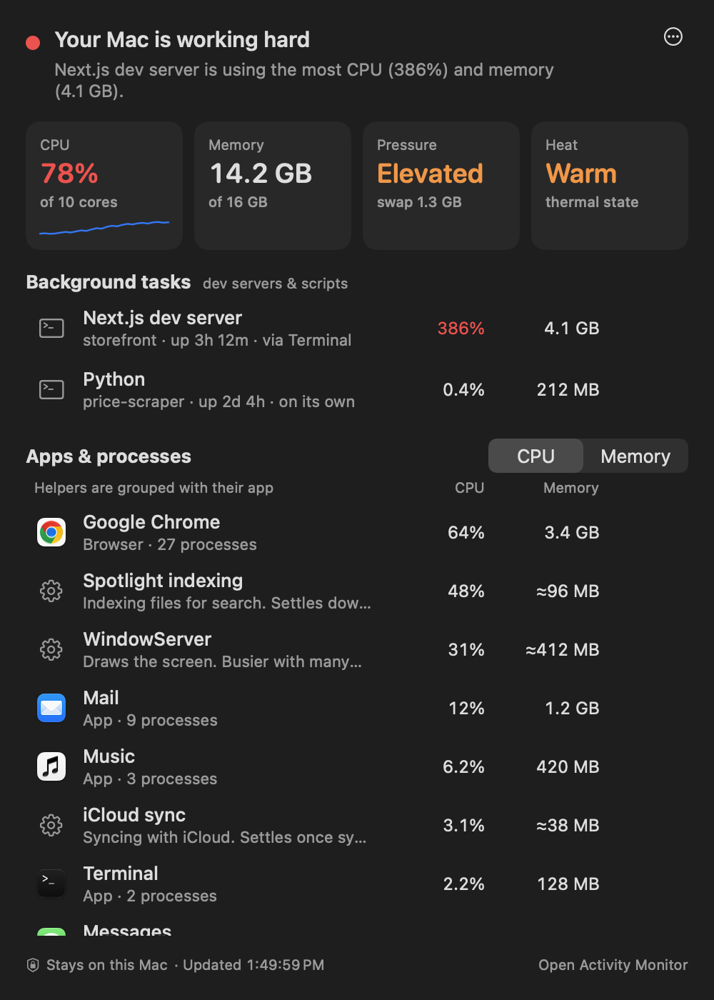

Why is your Mac sweating?
A menu bar app that names what’s heating up your Mac, down to the dev server you forgot to stop.
macsweat.parthh.devFree · Mac only

A menu bar app that names what’s heating up your Mac, down to the dev server you forgot to stop.